<title>Puesta en marcha del Club</title>
<meta name="claude:viewport-fit-sides" content="cover">
<link rel="preconnect" href="https://fonts.googleapis.com">
<link rel="stylesheet" href="https://fonts.googleapis.com/css2?family=Plus+Jakarta+Sans:wght@600;700;800&family=Inter:wght@400;500;600&family=JetBrains+Mono:wght@500;700&display=swap">
<style>
/* Recorrido guiado: columna de lectura con cada paso como captura grande + tres notas (qué hace, por qué importa, cómo contarlo) */
:root {
  --bg: #f6f8fa;
  --surface: #ffffff;
  --surface-2: #eef2f6;
  --ink: #0e2138;
  --ink-2: #3b4a5c;
  --muted: #5e6b7b;
  --line: rgba(14, 33, 56, 0.12);
  --accent: #047857;
  --accent-soft: #d6f3e7;
  --accent-ink: #065f46;
  --amber: #7a5208;
  --amber-soft: #fbefd2;
  --navy: #0e2138;
  --on-navy: #eef3f8;
  --display: "Plus Jakarta Sans", system-ui, sans-serif;
  --body: "Inter", system-ui, sans-serif;
  --mono: "JetBrains Mono", ui-monospace, monospace;
}
@media (prefers-color-scheme: dark) {
  :root:not([data-theme="light"]) {
    --bg: #0b1626; --surface: #13233a; --surface-2: #1a2d47; --ink: #eef3f8; --ink-2: #c9d4e0; --muted: #94a3b8;
    --line: rgba(238, 243, 248, 0.14); --accent: #34d399; --accent-soft: #0f3b2e; --accent-ink: #a7f3d0;
    --amber: #f5c55b; --amber-soft: #3a2c0d; --navy: #060d18; --on-navy: #eef3f8; color-scheme: dark;
  }
}
:root[data-theme="dark"] {
  --bg: #0b1626; --surface: #13233a; --surface-2: #1a2d47; --ink: #eef3f8; --ink-2: #c9d4e0; --muted: #94a3b8;
  --line: rgba(238, 243, 248, 0.14); --accent: #34d399; --accent-soft: #0f3b2e; --accent-ink: #a7f3d0;
  --amber: #f5c55b; --amber-soft: #3a2c0d; --navy: #060d18; --on-navy: #eef3f8; color-scheme: dark;
}

* { box-sizing: border-box; }
body { background: var(--bg); color: var(--ink); font: 16px/1.6 var(--body); }
.wrap { max-width: 1080px; margin: 0 auto; padding-left: max(16px, env(safe-area-inset-left, 0px)); padding-right: max(16px, env(safe-area-inset-right, 0px)); padding-block: 0 80px; }
h1, h2, h3 { font-family: var(--display); letter-spacing: -0.02em; line-height: 1.12; margin: 0; text-wrap: balance; }
p { margin: 0; text-wrap: pretty; }
a { color: var(--accent); text-underline-offset: 3px; }
:focus-visible { outline: 2px solid var(--accent); outline-offset: 3px; }

/* Cabecera en navy: la familia de ejemplo y el recorrido completo de un vistazo */
.hero { background: var(--navy); color: var(--on-navy); }
.hero .wrap { padding-block: 56px 44px; display: flex; flex-direction: column; gap: 22px; }
.hero h1 { font-size: clamp(34px, 5.6vw, 56px); font-weight: 800; color: #ffffff; max-width: 18ch; }
.hero p.lede { font-size: clamp(17px, 1.8vw, 19px); color: #d9e2ec; max-width: 62ch; }
.cast { display: flex; flex-wrap: wrap; gap: 10px; }
.cast span { font-size: 14px; padding: 7px 13px; border-radius: 999px; border: 1px solid rgba(238, 243, 248, 0.22); color: #e6edf4; }
.cast b { color: #ffffff; font-weight: 600; }
.path { list-style: none; margin: 6px 0 0; padding: 0; display: grid; grid-template-columns: repeat(auto-fit, minmax(120px, 1fr)); gap: 8px; counter-reset: p; }
.path li { counter-increment: p; display: flex; flex-direction: column; gap: 6px; font-size: 14px; color: #dbe4ee; }
.path li a { color: inherit; text-decoration: none; display: flex; flex-direction: column; gap: 6px; padding: 10px 12px; border-radius: 10px; background: rgba(238, 243, 248, 0.06); min-height: 100%; }
.path li a:hover { background: rgba(238, 243, 248, 0.12); }
.path li a::before { content: counter(p); font: 700 13px/1 var(--mono); width: 26px; height: 26px; border-radius: 999px; display: grid; place-items: center; background: #047857; color: #ffffff; }

/* Cada paso: título, captura y tres notas */
.step { padding-block: 56px 8px; display: flex; flex-direction: column; gap: 20px; scroll-margin-top: 12px; }
.step + .step { border-top: 1px solid var(--line); }
.step-head { display: flex; align-items: baseline; gap: 14px; }
.step-num { flex: none; font: 700 15px/1 var(--mono); width: 36px; height: 36px; border-radius: 999px; display: grid; place-items: center; background: var(--accent); color: var(--bg); transform: translateY(-4px); }
.step h2 { font-size: clamp(26px, 3.4vw, 34px); }
.step .intro { color: var(--ink-2); max-width: 70ch; font-size: 17px; }
figure { margin: 0; display: flex; flex-direction: column; gap: 8px; }
.shot { border-radius: 12px; border: 1px solid var(--line); overflow: hidden; background: var(--surface); box-shadow: 0 18px 40px -24px rgba(14, 33, 56, 0.45); }
.shot img { display: block; width: 100%; height: auto; }
.shot.tall { max-height: 760px; overflow-y: auto; }
figcaption { font-size: 13px; color: var(--muted); }
.notes { display: grid; grid-template-columns: repeat(auto-fit, minmax(min(100%, 280px), 1fr)); gap: 14px; }
.note { padding: 16px 18px; border-radius: 12px; background: var(--surface); border: 1px solid var(--line); display: flex; flex-direction: column; gap: 6px; min-width: 0; }
.note h3 { font-size: 15px; font-family: var(--display); font-weight: 700; letter-spacing: 0; }
.note p { font-size: 15px; color: var(--ink-2); }
.note.why { background: var(--accent-soft); border-color: transparent; }
.note.why h3, .note.why p { color: var(--accent-ink); }
.note.say p { font-style: italic; }
.pair { display: grid; grid-template-columns: repeat(auto-fit, minmax(min(100%, 420px), 1fr)); gap: 16px; align-items: start; }

/* Lo que ven los hijos y notas finales */
.aside { margin-top: 56px; padding: 28px clamp(18px, 3vw, 32px); border-radius: 16px; background: var(--surface); border: 1px solid var(--line); display: flex; flex-direction: column; gap: 18px; }
.aside h2 { font-size: clamp(24px, 3vw, 30px); }
.caveats { list-style: none; margin: 0; padding: 0; display: flex; flex-direction: column; gap: 10px; }
.caveats li { padding: 12px 16px; border-radius: 10px; background: var(--amber-soft); color: var(--ink); font-size: 15px; }
.caveats li b { color: var(--amber); }
code { font-family: var(--mono); font-size: 0.88em; background: var(--surface-2); padding: 2px 6px; border-radius: 6px; }
@media (max-width: 520px) { .step-head { gap: 10px; } .step-num { width: 30px; height: 30px; font-size: 13px; } }
@media (prefers-reduced-motion: reduce) { * { scroll-behavior: auto !important; } }
</style>

<header class="hero">
  <div class="wrap">
    <h1>Cómo se pone en marcha un club</h1>
    <p class="lede">El recorrido completo de un presidente nuevo en el Club de Inversión Familiar, paso a paso y con datos de ejemplo: de crear el club a hacer el primer repaso en familia. Cada paso explica por qué importa, para que nadie se pierda y el tono sea siempre educativo.</p>
    <div class="cast" aria-label="La familia de ejemplo">
      <span><b>Familia Ruiz</b> · de ejemplo</span>
      <span><b>Laura</b> · presidenta</span>
      <span><b>Irene</b> · 19 años</span>
      <span><b>Pablo</b> · 16 años</span>
      <span><b>20 €</b> al mes cada uno</span>
    </div>
    <ol class="path" aria-label="Los siete pasos">
      <li><a href="#paga">El club y la paga</a></li>
      <li><a href="#hijos">Invita a tus hijos</a></li>
      <li><a href="#cartera">Elige la cartera del mes</a></li>
      <li><a href="#publicar">Pon el plazo y publica</a></li>
      <li><a href="#avisar">Avisa a tus hijos</a></li>
      <li><a href="#deciden">Mientras deciden</a></li>
      <li><a href="#repaso">El repaso en familia</a></li>
    </ol>
  </div>
</header>

<main class="wrap">

  <section class="step" id="inicio" aria-labelledby="t-inicio">
    <div class="step-head"><h2 id="t-inicio">Laura acaba de crear el club</h2></div>
    <p class="intro">Otra familia le dio una de sus cinco invitaciones. Al registrarse entra directamente en el asistente; si vuelve a Inicio, el asistente es lo único que le pide hacer.</p>
    <figure><div class="shot">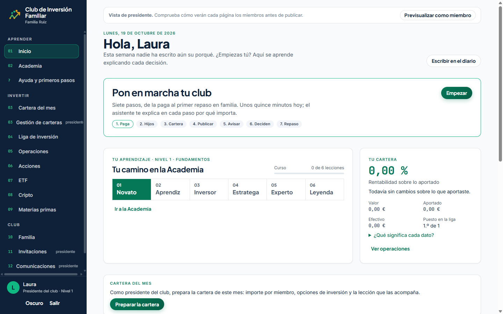</div><figcaption>Inicio de la presidenta, con el club recién creado.</figcaption></figure>
    <div class="notes">
      <div class="note"><h3>Qué ve</h3><p>Una sola tarjeta: «Pon en marcha tu club», siete pasos y un botón. Nada de tareas, lecciones ni avisos compitiendo por su atención.</p></div>
      <div class="note say"><h3>Para contarlo</h3><p>«Lo primero que ves no es un panel lleno de botones: es un camino de siete pasos que te explica cada uno.»</p></div>
    </div>
  </section>

  <section class="step" id="paga" aria-labelledby="t-paga">
    <div class="step-head"><span class="step-num" aria-hidden="true">1</span><h2 id="t-paga">El club y la paga</h2></div>
    <p class="intro">Laura confirma el nombre del club y decide cuánto invierte cada persona al mes. El asistente propone 20 €, con atajos de 10, 20, 30 y 50 €, y calcula el total de la familia.</p>
    <figure><div class="shot">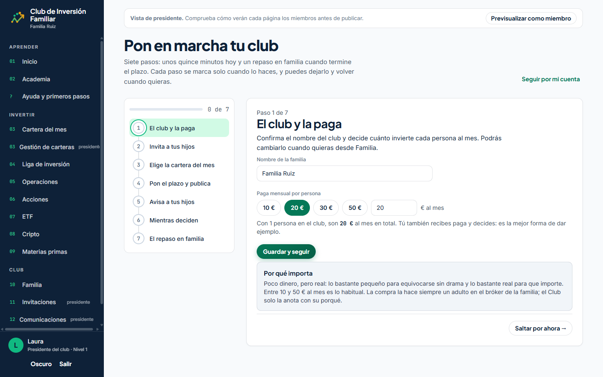</div></figure>
    <div class="notes">
      <div class="note why"><h3>Por qué importa</h3><p>Poco dinero, pero real: lo bastante pequeño para equivocarse sin drama y lo bastante real para que importe. La compra la hace siempre un adulto en el bróker de la familia.</p></div>
      <div class="note say"><h3>Para contarlo</h3><p>«La presidenta también recibe paga y decide: la mejor forma de enseñar es dar ejemplo.»</p></div>
    </div>
  </section>

  <section class="step" id="hijos" aria-labelledby="t-hijos">
    <div class="step-head"><span class="step-num" aria-hidden="true">2</span><h2 id="t-hijos">Invita a tus hijos</h2></div>
    <p class="intro">Laura crea una invitación para Irene y otra para Pablo, con su móvil. Cada una sale por WhatsApp con el enlace de alta. Irene ya ha entrado; la de Pablo está pendiente.</p>
    <figure><div class="shot">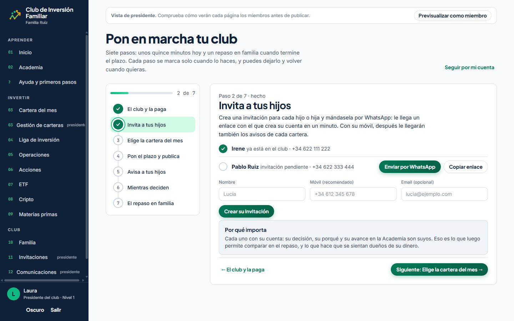</div></figure>
    <div class="notes">
      <div class="note"><h3>Qué hace</h3><p>Nombre y móvil, «Crear su invitación» y «Enviar por WhatsApp». El móvil pasa a la cuenta del hijo al registrarse, así los avisos le llegan sin rellenar nada.</p></div>
      <div class="note why"><h3>Por qué importa</h3><p>Cada uno con su cuenta: su decisión, su porqué y su avance son suyos. Eso es lo que luego permite comparar en el repaso.</p></div>
    </div>
  </section>

  <section class="step" id="cartera" aria-labelledby="t-cartera">
    <div class="step-head"><span class="step-num" aria-hidden="true">3</span><h2 id="t-cartera">Elige la cartera del mes</h2></div>
    <p class="intro">Tres propuestas del repositorio, cada una con su lección escrita y sus opciones. Laura elige «Núcleo global de bajo coste»: cuatro ETF que compran el mundo entero, y cada uno elige de uno a tres.</p>
    <figure><div class="shot tall">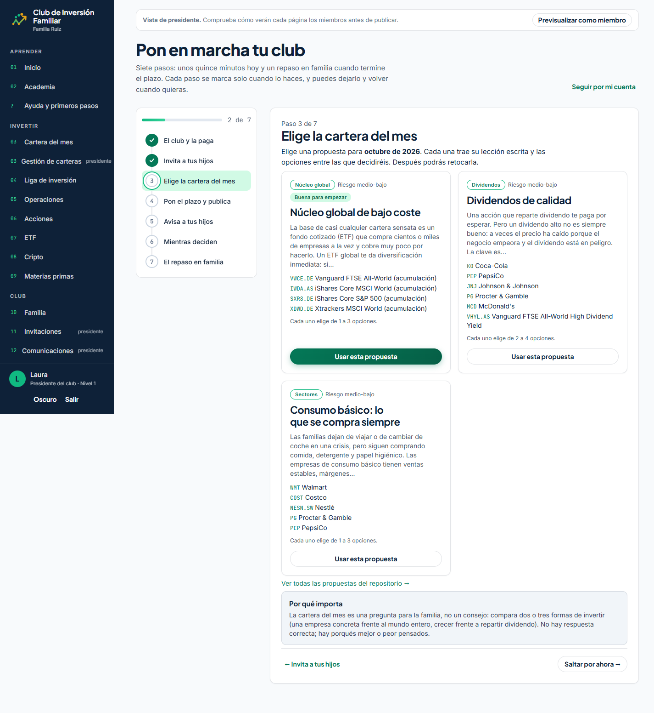</div><figcaption>La captura completa se desplaza dentro del recuadro.</figcaption></figure>
    <div class="notes">
      <div class="note why"><h3>Por qué importa</h3><p>La cartera del mes es una pregunta para la familia, no un consejo: compara dos o tres formas de invertir. No hay respuesta correcta; hay porqués mejor o peor pensados.</p></div>
      <div class="note say"><h3>Para contarlo</h3><p>«No hace falta saber qué proponer: hay propuestas con la lección ya escrita, y se pueden retocar.»</p></div>
    </div>
  </section>

  <section class="step" id="publicar" aria-labelledby="t-publicar">
    <div class="step-head"><span class="step-num" aria-hidden="true">4</span><h2 id="t-publicar">Pon el plazo y publica</h2></div>
    <p class="intro">Antes de publicar, Laura ve quién recibe cuánto (ella, Irene y Pablo, 20 € cada uno) y elige el plazo: una semana por defecto.</p>
    <figure><div class="shot">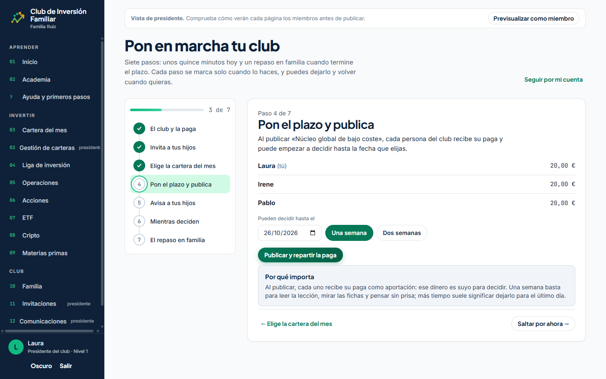</div></figure>
    <div class="notes">
      <div class="note why"><h3>Por qué importa</h3><p>Al publicar, cada uno recibe su paga como aportación: ese dinero es suyo para decidir. Una semana basta para leer, mirar las fichas y pensar sin prisa.</p></div>
      <div class="note"><h3>Un detalle que evita problemas</h3><p>Pablo entró después de elegir la propuesta y aun así recibe su paga: el asistente se la asigna al publicar.</p></div>
    </div>
  </section>

  <section class="step" id="avisar" aria-labelledby="t-avisar">
    <div class="step-head"><span class="step-num" aria-hidden="true">5</span><h2 id="t-avisar">Avisa a tus hijos</h2></div>
    <p class="intro">Primero, cómo le llegará el mensaje a cada uno: su nombre, su importe, el plazo y el enlace directo a la cartera. Después, un botón de WhatsApp por hijo; Laura solo pulsa enviar.</p>
    <div class="pair">
      <figure><div class="shot">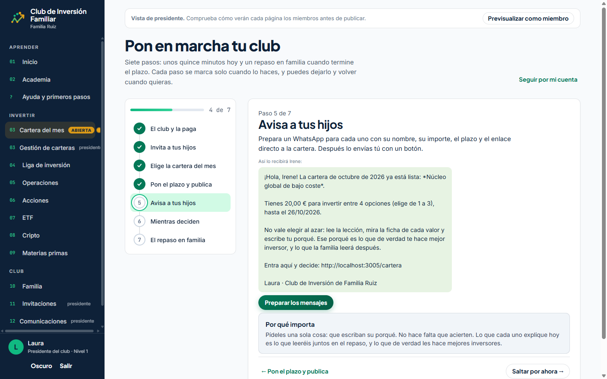</div><figcaption>Vista previa del mensaje.</figcaption></figure>
      <figure><div class="shot">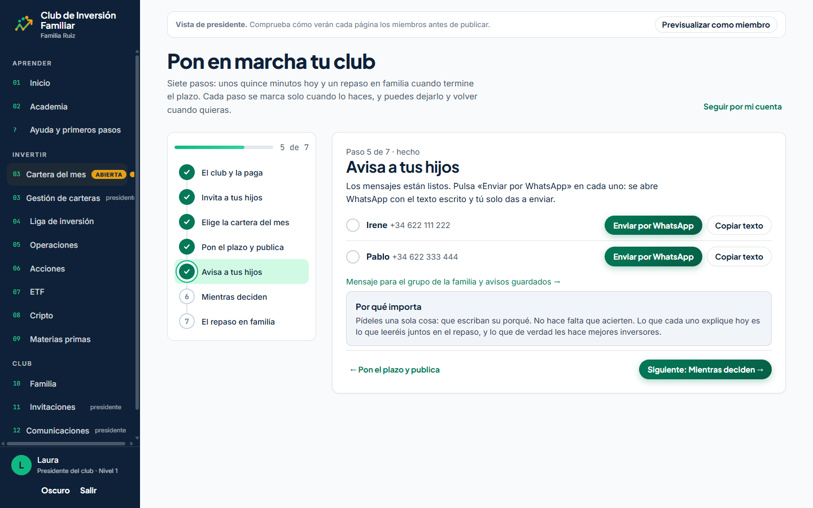</div><figcaption>Mensajes listos para enviar.</figcaption></figure>
    </div>
    <div class="notes">
      <div class="note why"><h3>Por qué importa</h3><p>Pídeles una sola cosa: que escriban su porqué. No hace falta que acierten. Lo que expliquen hoy es lo que leeréis juntos en el repaso.</p></div>
      <div class="note say"><h3>Para contarlo</h3><p>«El aviso llega por WhatsApp, donde ya están, con el enlace que les lleva directos a decidir.»</p></div>
    </div>
  </section>

  <section class="step" id="deciden" aria-labelledby="t-deciden">
    <div class="step-head"><span class="step-num" aria-hidden="true">6</span><h2 id="t-deciden">Mientras deciden</h2></div>
    <p class="intro">Irene ya ha decidido (el ETF mundial, con su porqué); Pablo todavía no, y a Laura le queda decidir lo suyo. El asistente le da tres pautas para acompañar sin decidir por ellos.</p>
    <figure><div class="shot">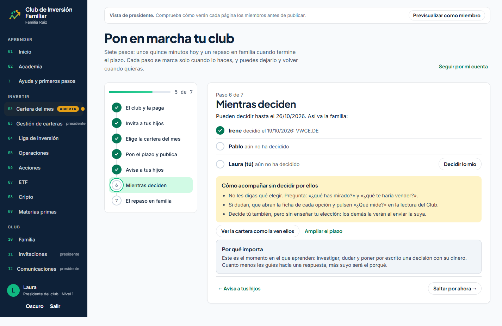</div></figure>
    <div class="notes">
      <div class="note"><h3>Cómo acompañar</h3><p>No decirles qué elegir; preguntar «¿qué has mirado?» y «¿qué te haría vender?». Si dudan, que abran la ficha de cada opción.</p></div>
      <div class="note why"><h3>Por qué importa</h3><p>Es el momento en el que aprenden: investigar, dudar y poner por escrito una decisión con su dinero. Cuanto menos les guíes hacia una respuesta, más suyo será el porqué.</p></div>
    </div>
  </section>

  <section class="step" id="repaso" aria-labelledby="t-repaso">
    <div class="step-head"><span class="step-num" aria-hidden="true">7</span><h2 id="t-repaso">El repaso en familia</h2></div>
    <p class="intro">Al terminar el plazo, Laura cierra la cartera y se abre el repaso: las opciones de mejor a peor, qué eligió cada uno, cómo le ha ido y su porqué entre comillas. Arriba, la guía para hacerlo en familia.</p>
    <div class="pair">
      <figure><div class="shot tall">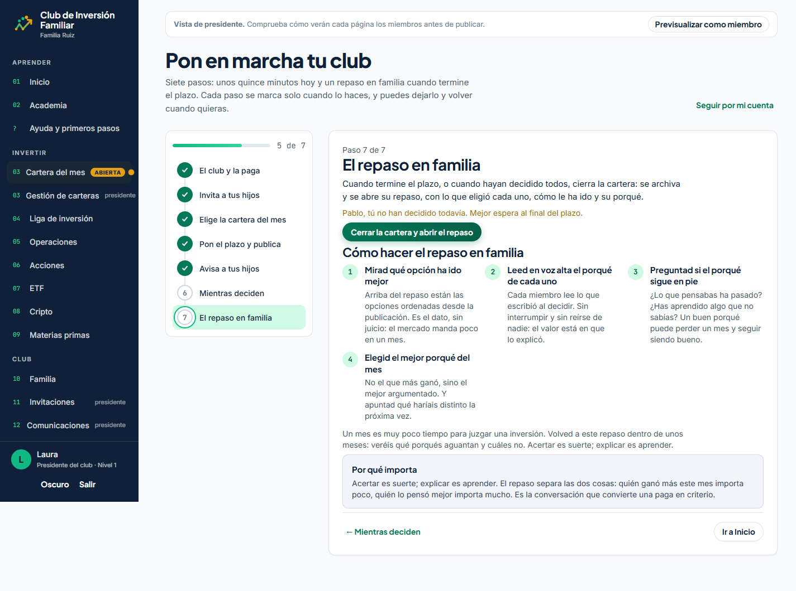</div><figcaption>Antes de cerrar: avisa si alguien no ha decidido.</figcaption></figure>
      <figure><div class="shot tall">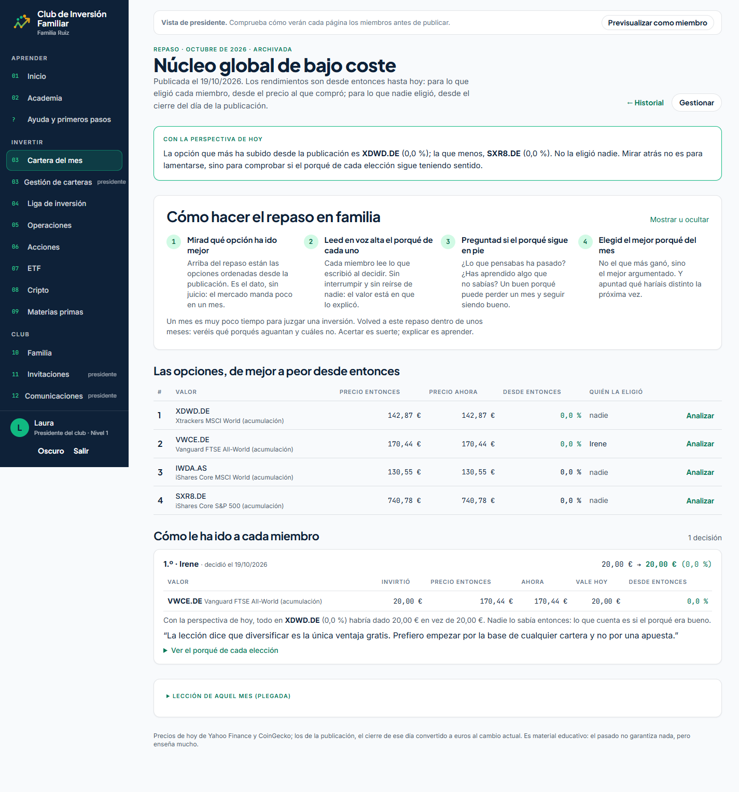</div><figcaption>El repaso, con la guía de cuatro pasos.</figcaption></figure>
    </div>
    <div class="notes">
      <div class="note"><h3>Los cuatro pasos</h3><p>Mirad qué opción ha ido mejor. Leed en voz alta el porqué de cada uno. Preguntad si ese porqué sigue en pie. Elegid el mejor porqué del mes, no el que más ganó.</p></div>
      <div class="note why"><h3>Por qué importa</h3><p>Acertar es suerte; explicar es aprender. El repaso separa las dos cosas: quién ganó más este mes importa poco, quién lo pensó mejor importa mucho.</p></div>
    </div>
  </section>

  <section class="step" id="marcha" aria-labelledby="t-marcha">
    <div class="step-head"><h2 id="t-marcha">Tu club está en marcha</h2></div>
    <p class="intro">Con el primer repaso hecho, los siete pasos quedan marcados y el asistente propone preparar la cartera del mes siguiente. A partir de aquí, cada mes es una pregunta nueva.</p>
    <figure><div class="shot">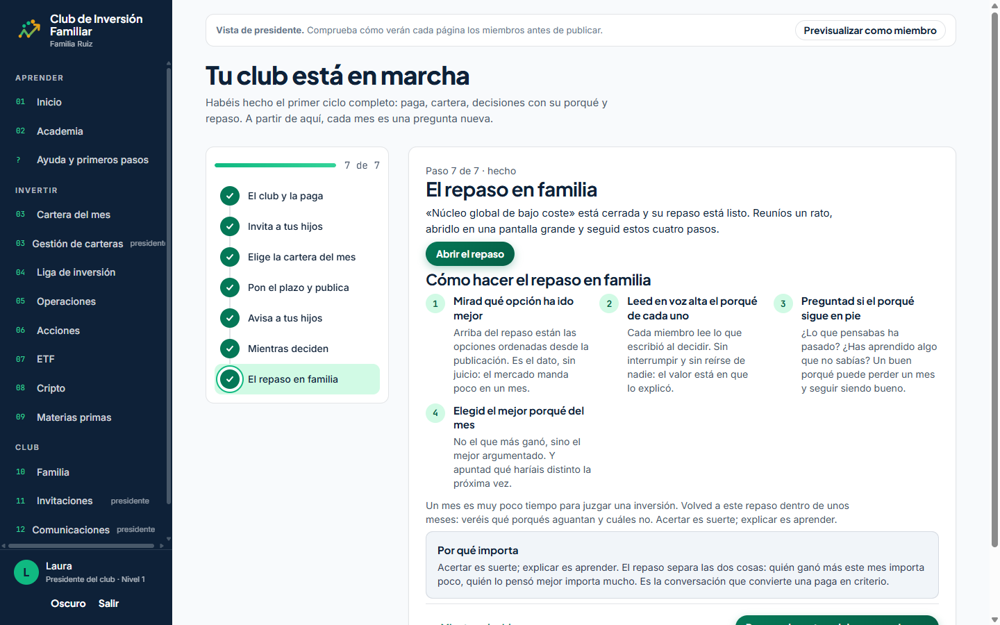</div></figure>
  </section>

  <section class="aside" aria-labelledby="t-hijos-ven">
    <h2 id="t-hijos-ven">Mientras tanto, lo que ven los hijos</h2>
    <p>Cuando Irene usa su invitación, entra en una bienvenida de cuatro pantallas en «tú»: su paga, cómo es un mes, su perfil y su primera misión. En la cartera, como nunca ha decidido, ve una guía de tres pasos antes del formulario.</p>
    <div class="pair">
      <figure><div class="shot">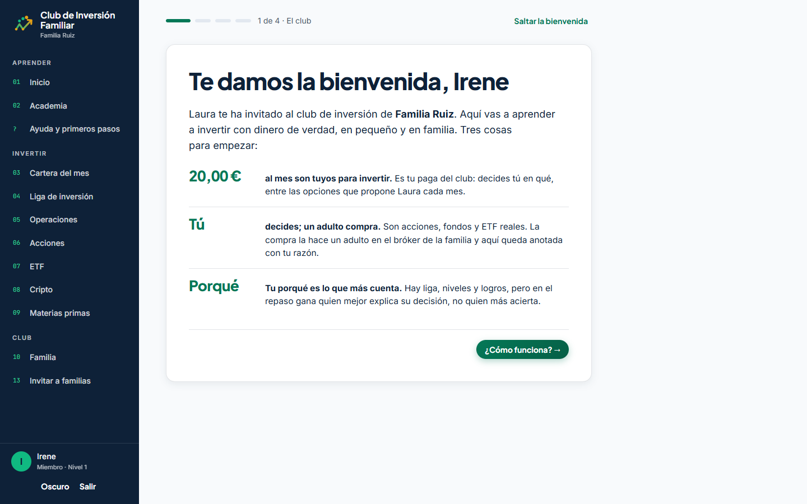</div><figcaption>La bienvenida de Irene.</figcaption></figure>
      <figure><div class="shot">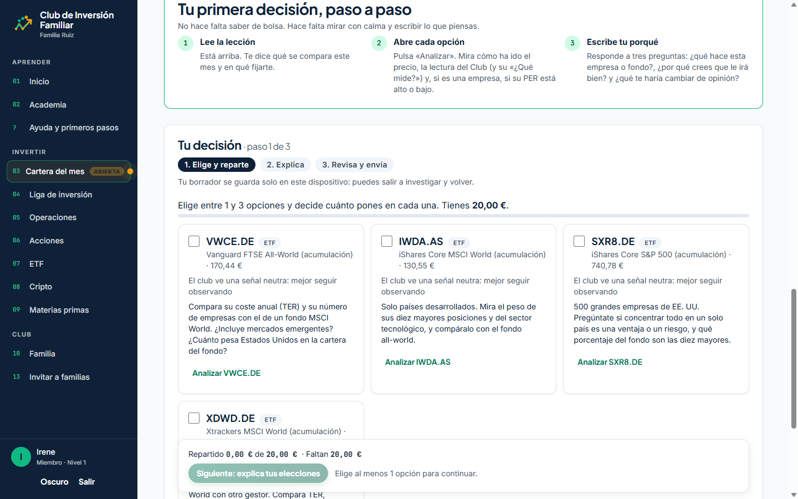</div><figcaption>Su primera decisión, guiada.</figcaption></figure>
    </div>
  </section>

  <section class="aside" aria-labelledby="t-notas">
    <h2 id="t-notas">Antes de enseñarlo</h2>
    <ul class="caveats">
      <li><b>Datos de ejemplo.</b> La Familia Ruiz, sus móviles y sus decisiones son inventados; las cotizaciones son reales del día de la captura.</li>
      <li><b>Todo pasa el mismo día.</b> Por eso en el repaso las rentabilidades salen al 0,0 %. En un club real el repaso se hace semanas después, cuando ya hay diferencias que comentar.</li>
      <li><b>Para repetir el recorrido en directo</b>, en la copia local: <code>npx tsx --env-file=.env scripts/seed-onboarding-demo.ts</code> deja la Familia Ruiz recién creada; se entra como <code>laura@ruiz.demo</code> y se abre «Pon en marcha tu club».</li>
    </ul>
  </section>

</main>
